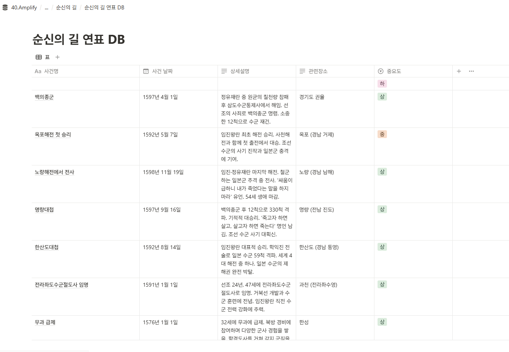

노션 CMS 구축하기
🚢 순신의 길 (Sun-sin's Path)
충무공 이순신 장군의 발자취를 따라 떠나는 역사 여행 정보 웹사이트
노션을 CMS로 활용하여 콘텐츠 관리 자동화 구현
📊 노션 → 웹사이트 워크플로우
📝
노션 CMS
📎
여행지 정보
연표 데이터 관리
⚙️
GitHub Actions
자동 데이터
업데이트 실행
📄
JSON 생성
구조화된
데이터 파일 변환
🌐
웹사이트 배포
GitHub Pages
자동 업데이트
🔗 웹사이트 확인하기
×
